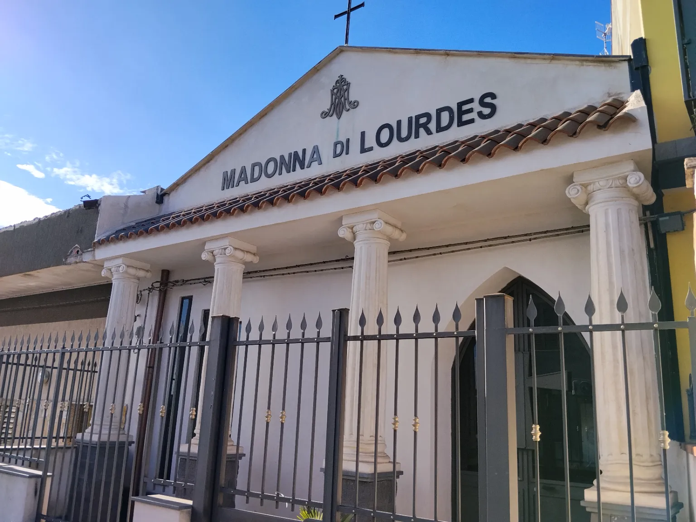

La Madonna di Lourdes a Calatabiano
Lungo via Monteforte Banco si trova la chiesa dedicata alla Madonna di Lourdes. La Diocesi di Acireale la registra tra le chiese comprese nel territorio della parrocchia di Maria Santissima Annunziata.

Ascolta la storia con Elena
Durata 1:27
Leggi la trascrizione integrale
Questa tappa conduce a via Monteforte Banco. Qui si trova la chiesa della Madonna di Lourdes, una delle sedi di culto che fanno capo alla parrocchia dell’Annunziata. La sua posizione ci aiuta a leggere la geografia religiosa di Calatabiano fuori dalle piazze del centro storico.
La dedicazione e le fonti disponibili
La dedicazione alla Vergine di Lourdes richiama la devozione mariana diffusa nella Chiesa cattolica dopo gli eventi che la tradizione religiosa colloca in Francia nel 1858. A Calatabiano la chiesa è registrata in via Monteforte Banco, nel territorio della parrocchia dell'Annunziata.
Le fonti finora individuate ne confermano denominazione e ubicazione, ma non precisano la data di costruzione, gli interventi successivi o la provenienza degli arredi. Per ricostruirne la storia saranno necessari gli inventari ecclesiastici e gli atti riguardanti la fabbrica.
La chiesa nel piano comunale
La relazione generale del Piano di emergenza comunale del 2022 include la Madonna di Lourdes fra gli edifici rilevanti e la colloca in via Monteforte Banco. Alla registrazione ecclesiastica della Diocesi si affianca così quella civile del Comune, che identifica la chiesa nella mappa dei luoghi di riferimento del territorio.
Sei arrivato alla fine di questa tappa dell’Archivio Documentale di Calatabiano.
La dedicazione e le fonti disponibili
La dedicazione alla Vergine di Lourdes richiama la devozione mariana diffusa nella Chiesa cattolica dopo gli eventi che la tradizione religiosa colloca in Francia nel 1858. A Calatabiano la chiesa è registrata in via Monteforte Banco, nel territorio della parrocchia dell'Annunziata.
Le fonti finora individuate ne confermano denominazione e ubicazione, ma non precisano la data di costruzione, gli interventi successivi o la provenienza degli arredi. Per ricostruirne la storia saranno necessari gli inventari ecclesiastici e gli atti riguardanti la fabbrica.
La chiesa nel piano comunale
La relazione generale del Piano di emergenza comunale del 2022 include la Madonna di Lourdes fra gli edifici rilevanti e la colloca in via Monteforte Banco. Alla registrazione ecclesiastica della Diocesi si affianca così quella civile del Comune, che identifica la chiesa nella mappa dei luoghi di riferimento del territorio.
Fonti Comune di Calatabiano, Piano di emergenza comunale, relazione generale e Diocesi di Acireale, chiese del territorio parrocchiale.
Approfondimenti
Per saperne di più sono disponibili le fonti storiche.